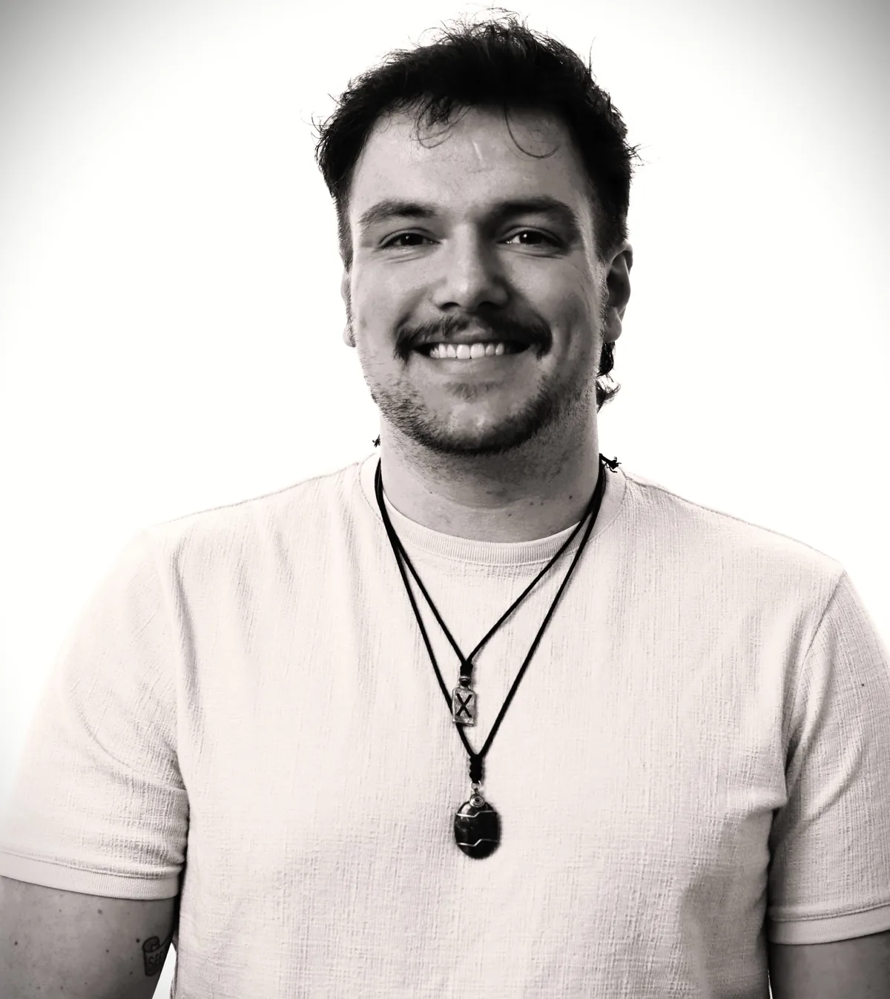
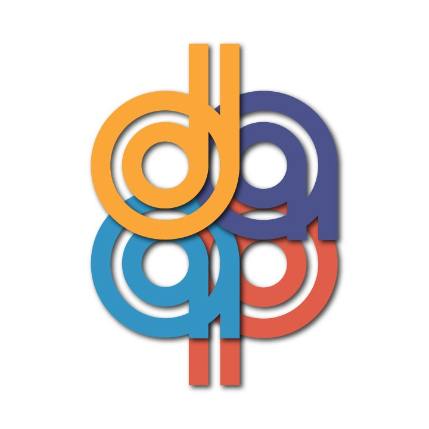
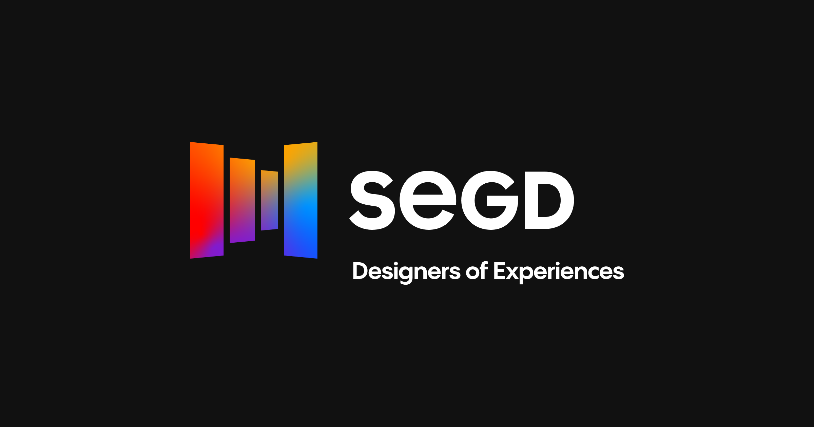
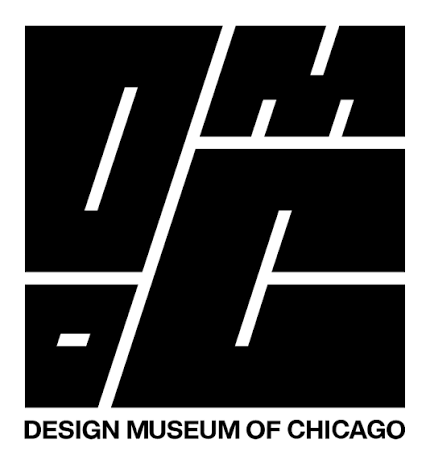

DAAPWorks 2026 Director's Choice Gallery — Proctor Landing Park
SEGD Experiential Design Honorable Mention — Proctor Landing Park
Selected for Design Museum of Chicago DAAPworks exhibitionI'm Matthew Reindl, a Cincinnati-based emerging landscape architect and 2026 Master of Landscape Architecture graduate from the University of Cincinnati's College of DAAP. Landscape architecture gives me a way to bring together the things I care about most: public space, ecology, problem-solving, visual communication, and making.
I am especially drawn to parks, trails, campuses, and water-shaped landscapes where thoughtful design can improve both environmental performance and everyday life.
My process moves between research and hands-on exploration. I use GIS and site analysis to understand the systems already shaping a place, then develop ideas through AutoCAD, Rhino, digital visualization, 3D printing, laser cutting, and physical models. My experience with the Cincinnati Recreation Commission has grounded that process in real public sites, budgets, planting decisions, field verification, and implementation.
That approach comes together in Proctor Landing Park, my capstone proposal for a flood-prone Ohio River landscape. Organized around Paddy Creek, the project combines wetland and riparian restoration, recreation, circulation, and public-health goals in a park designed to work with seasonal flooding. It received recognition through DAAPWorks and SEGD and was selected for exhibition at the Design Museum of Chicago.
Outside of design, I play guitar with the 5 O'Clock Rays, build elaborate Dungeons & Dragons campaigns, and have a habit of tinkering with anything that can be modeled, rearranged, programmed, or made more intuitive. I live in Cincinnati with my partner, Elizabeth, and our dog, Tabitha. Music, storytelling, and life in the city give me different ways to think about rhythm, atmosphere, collaboration, and how people experience a place.
I am currently working toward professional licensure and looking to continue growing alongside experienced, collaborative teams. I want to contribute to landscapes that are ecologically thoughtful, publicly useful, and grounded in the real character of their communities.